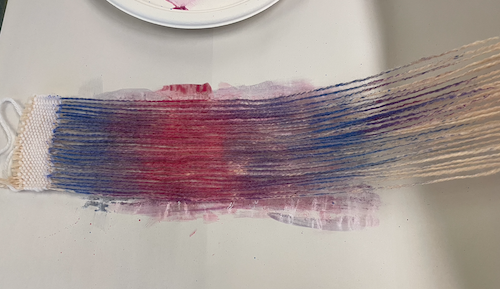
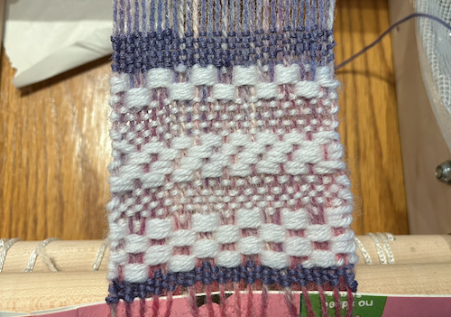
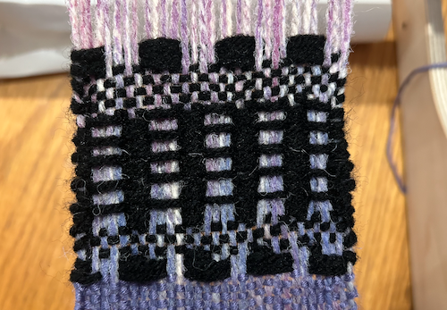

This assignment was completed on October 8, 2023
My goal for this weekly assignment was to experiment with different thermochromic colors in order to discover what types of different patterns can be created when heat is applied. I wanted to use different types of weaving structures as well.
preparation
The first part of our experimentation was where to apply the thermochromic colors. We had both pink and blue to work with, so I decided to paint the warp a gradient up from blue to purple to pink and then back. We chose this so that we could use yarn to add the patterns into the swatch, and the colors would change when heated up, creating new patterns.
swatch one: white on white
The first swatch I created was a swatch that had the gradiented thermochromic warp and white yarn for the weft. I wanted to experiment with tabby, overshot, and twill, and the mix of them all together. I thought white would be a clever color to use because when the swatch is heated up, it will just be a textured white swatch, and then the colors would fade back in to hopefully create a magic effect.
swatch two: black and white
The second swatch I created was another experiment with overshot and tabby together. I wanted to create a cool pattern with the weft regardless of heated or cooled thermochromic pigments. Additionally, I was excited that when heated, the swatch would be black and white and look like an abstract checker.
final reflection
Overall, I was really happy with what I produced. I was really excited and happy with the weaving techniques I used, and how they looked when they were all mixed together. I think that thermochromic pigments are really exciting, and I would love to experiment with different types of pigments that are changed by different qualities.